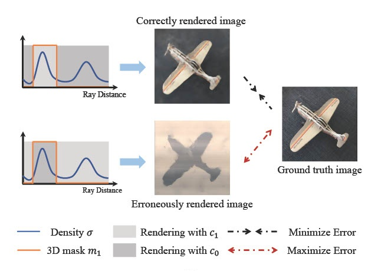
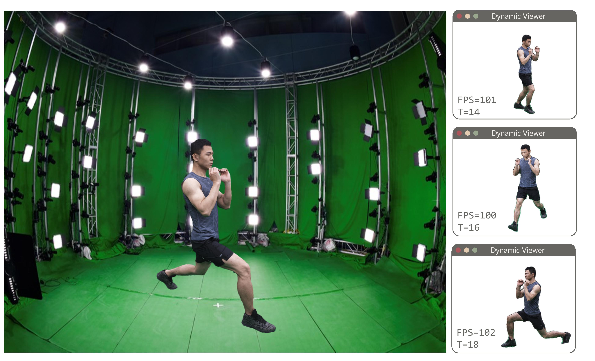
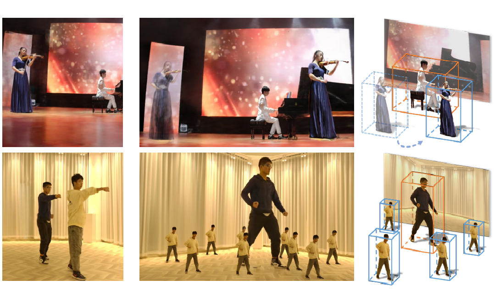

Research
I am currently focusing on utilizing neural scene representations to understand, reconstruct, render and edit real world.
|
|

|
Unsupervised Multi-View Object Segmentation Using Radiance Field Propagation
Xinhang Liu, Jiaben Chen, Huai Yu, Yu-Wing Tai, Chi-Keung Tang
NeurIPS, 2022
project page /
arXiv /
code
We study segmenting objects in 3D during reconstruction given only unlabeled multi-view images of a scene, from an information-theoretic perspective.
|
|

|
Fourier PlenOctrees for Dynamic Radiance Field Rendering in Real-time
Liao Wang*, Jiakai Zhang*, Xinhang Liu, Fuqiang Zhao, Yanshun Zhang, Yingliang Zhang, Minye Wu Lan Xu, Jingyi Yu
CVPR, 2022
project page /
arXiv
A novel technique to tackle efficient neural modeling and real-time rendering of dynamic scenes captured under the free-view video (FVV) setting.
|
|

|
Editable Free-Viewpoint Video using a Layered Neural Representation
Jiakai Zhang, Xinhang Liu, Xinyi Ye, Fuqiang Zhao, Yanshun Zhang, Minye Wu, Yingliang Zhang, Lan Xu, Jingyi Yu
SIGRRAPH, 2021
project page /
arXiv /
code /
Two Minute Papers
The first approach for editable photo-realistic free-viewpoint video generation for large-scale dynamic scenes using only sparse 16 cameras.
|
Service & Teaching
Conference Reviewer of CVPR 2022.
CS182 Introduction to Machine Learning (21F), Teaching Assistant.
SI100B Introduction to Information Science and Technology (21F), Teaching Assistant.
CS276 Computational Photography (21F), Guest Lecture in 'NeRF'.
|
Design and source code modified based on Jon Barron's website
Last update: Sep, 2022
|
|